LOS swept-footprint tham lam + hai d hình học + tìm α=q/d thô–tinh + time gate + DP
Bản duy nhất dùng để tổng hợp kiến thức • 35 ca Gazebo/RViz2 live • 02/08/2026
Kỷ luật bằng chứng. Mọi con số so sánh chính trong báo cáo được tính từ 35 JSON thu đồng thời với 35 ảnh RViz2. Mỗi ca có cùng raw path cho tất cả smoother, lưu toàn bộ pose và SHA-256. Bảy ảnh Gazebo xác nhận đúng world. Ảnh ghép không dịch chuyển đường: phần phóng to vẽ lại đúng tọa độ ROS topic đã xuất hiện trong ảnh gốc.
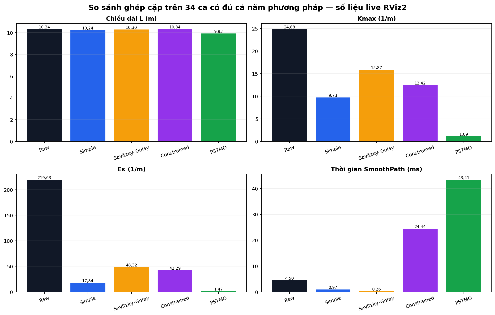
Tổng quan bốn chỉ số trên 34 nhóm ghép cặp đầy đủ.
1. Kết luận điều hành
PSTMO hiện tại chạy đúng một pipeline: condition → LOS → sinh transition → time gate → DP → ghép → kiểm tra cuối. Trong 35 ca đại diện, PSTMO thành công 35/35 và không có mẫu footprint va chạm khi hậu kiểm trên bản đồ tĩnh. Simple thành công 34/35; ba phương pháp còn lại thành công 35/35.
Phương pháp
Thành công
L (m)
Kmax (1/m)
Eκ (1/m)
T (ms)
Clr min (m)
Mẫu va chạm TB
Raw
35/35
10,3395
24,8792
219,6271
4,50
0,1613
0
Simple
34/35
10,2423
9,7309
17,8415
0,97
0,1908
0
Savitzky–Golay
35/35
10,3022
15,8719
48,3213
0,26
0,1912
0
Constrained
35/35
10,3383
12,4219
42,2936
24,44
0,2138
0
PSTMO
35/35
9,9295
1,0949
1,4737
43,41
0,0402
0
Các trung bình L/Kmax/Eκ/T/clearance trong bảng trên dùng đúng 34 ca có đủ năm phương pháp. Tỷ lệ thành công dùng toàn bộ 35 ca. Cách tách này tránh thiên lệch do chỉ Simple thất bại ở một ca.
PSTMO so với
ΔL giảm
ΔKmax giảm
ΔEκ giảm
T tăng tuyệt đối
Clr min giảm
Raw
3,97%
95,60%
99,33%
38,91 ms
75,04%
Simple
3,05%
88,75%
91,74%
42,44 ms
78,90%
Savitzky–Golay
3,62%
93,10%
96,95%
43,15 ms
78,95%
Constrained
3,95%
91,19%
96,52%
18,97 ms
81,17%
Cách đọc “clearance giảm”. Đây là giảm khoảng dự phòng tới vật cản trên các đường vẫn không va chạm footprint; không phải giảm kích thước footprint và không đồng nghĩa collision. LOS cố ý chọn điểm xa nhất thỏa cổng an toàn, không tối ưu clearance. Vì vậy clearance thấp hơn là đánh đổi cần báo cáo, không phải bằng chứng thuật toán mất an toàn.
2. Phạm vi, thuật ngữ và điều không được trộn
PSTMO là tên thuật toán độc lập trong báo cáo; không dùng tên cũ làm tiêu đề phương pháp.
Raw là output planner sau neo chính xác start/goal; không phải một smoother.
Quay tại chỗ là một trạng thái khả thi tại góc, không phải tên thuật toán.
Hybrid không thuộc phép so sánh hội nghị này và không xuất hiện trong bảng kết quả chính.
Clearance hậu kiểm khác với cổng collision footprint và khác inflation cost ở tâm robot.
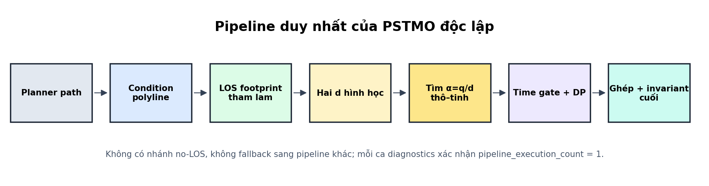
Pipeline duy nhất của PSTMO độc lập.
3. Đầu vào, mô hình robot và bất biến
Đầu vào là nav_msgs/Path trong frame map, costmap toàn cục và footprint sống từ /global_costmap/published_footprint. Khi topic footprint không hợp lệ, fallback là hình chữ nhật 0,44×0,34 m. Khoảng cách tâm hai bánh là 0,2548 m.
Đại lượng
Giá trị
Vai trò
vmax
0,30 m/s
Giới hạn vận tốc tịnh tiến
ωmax
0,80 rad/s
Giới hạn vận tốc góc
Vbánh,max
0,36 m/s
Giới hạn bánh trái/phải
a_y,max
0,18 m/s²
Giới hạn gia tốc ngang |v²κ|
a+ / a−
0,35 / 0,45 m/s²
Tăng/giảm tốc dọc
αω,max
1,20 rad/s²
Gia tốc quay
output spacing
0,05 m
Khoảng mẫu output
transition spacing
0,02 m
Khoảng mẫu Bézier
max footprint cost
252
Ngưỡng tâm; footprint vẫn quét riêng
Bất biến đầu ra: bảo toàn start/goal pose; hữu hạn; không có duplicate-position ngoài marker quay chủ ý; mọi chuyển động tịnh tiến/xoay qua swept-footprint; profile thời gian hợp lệ; và diagnostics final_invariants_verified=true.
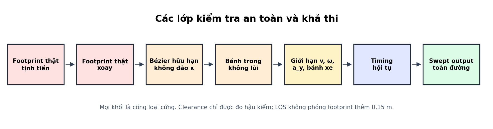
Chuỗi cổng cứng trước khi một candidate hoặc output được chấp nhận.
4. Condition polyline: giảm nhiễu lưới nhưng giữ corridor
Conditioning dùng Ramer–Douglas–Peucker lặp, không đệ quy. Một chord chỉ thay một dải điểm khi độ lệch cực đại không vượt 1,5×resolution = 0,075 m và toàn chord qua kiểm tra swept-footprint. Chord hình học đạt nhưng không an toàn bị tách tiếp; đoạn thẳng không an toàn được chia đôi để tránh lệch trái.
δ(i,j)=maxi<k<j dist(Pk, segment(Pi,Pj)) ≤ 0,075 m
Sau RDP, bộ triệt dao động cục bộ chỉ hoạt động khi có ít nhất hai lần đổi dấu góc, span ≤2,0 m, góc xét ≥0,20 rad, độ lệch ≤0,15 m và chord vẫn an toàn footprint.
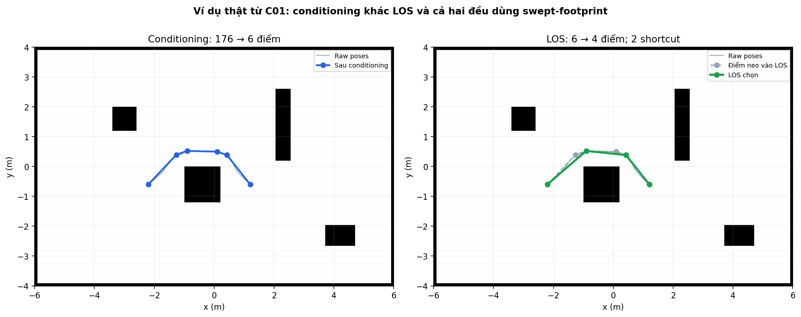
C01 thật: Raw → conditioning → LOS; hai bước có mục đích khác nhau.
5. LOS tham lam xét footprint thật
Từ anchor Pᵢ, LOS duyệt candidate từ goal ngược về Pᵢ₊₁ và nhận candidate xa nhất qua đủ bốn kiểm tra: swept translation của chord; xoay ở start; xoay tại junction đã giữ; xoay từ chord cuối sang goal orientation. Cạnh Pᵢ→Pᵢ₊₁ là candidate cuối tự nhiên, không phải fallback.
Nếu chord xa va chạm, thử chord gần hơn.
Nếu chord tịnh tiến an toàn nhưng phép xoay không an toàn, vẫn loại.
Nếu mọi shortcut bị loại nhưng cạnh liên tiếp an toàn, accepted_shortcuts=0 và LOS giữ chuỗi neo.
Nếu cả cạnh liên tiếp không an toàn, pipeline báo thất bại; không trả input một cách im lặng.
Không có padding 0,15 m. Footprint thật là điều kiện loại cứng. Inflation layer của costmap đảm nhiệm dự phòng vận hành. LOS không dùng clearance làm mục tiêu và không chạy nhánh no-LOS song song.
6. Hình học transition Bézier G²
Với đỉnh V, vector đơn vị vào u và ra v, trim d đặt entry A=V−du và exit B=V+dv. Đặt α=q/d. Sáu control point là:
P₀=A; P₁=A+qu; P₂=A+2qu; P₃=B−2qv; P₄=B−qv; P₅=B
Do P₁−P₀=P₂−P₁ và P₅−P₄=P₄−P₃, đạo hàm bậc hai ở hai đầu song song đúng cách để κ đầu/cuối bằng 0. Miền 0<α≤0,5; α>0,5 bị loại. Candidate còn bị loại nếu đạo hàm suy biến, curvature đổi dấu ngoài ý muốn hoặc bánh trong phải quay lùi.
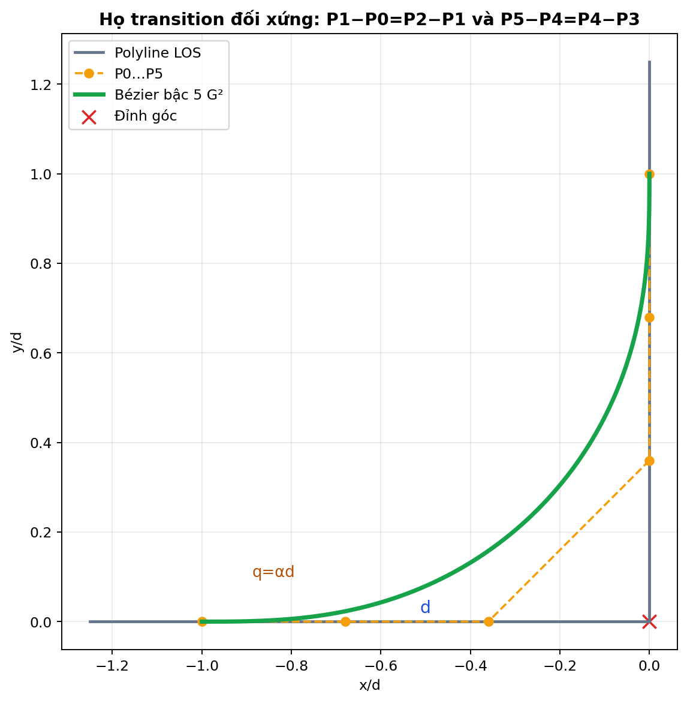
Cấu trúc hình học của transition bậc năm; hình minh họa chuẩn hóa d=1.
κ(u)=(x′y″−y′x″)/(x′²+y′²)3/2; Eκ=∫κ² ds
7. Sinh hai d có cơ sở hình học
dpref=min(0,8; Lin; Lout)
Ở đoạn chung với góc kề, ngân sách một phía bằng ½max(0,L−m); ở đoạn nối start/goal dùng toàn bộ L. Khi đó dcompat là min của dpref và hai ngân sách. dcompat bị bỏ nếu dưới dmin=0,02 m hoặc gần trùng dpref trong ½min(sample spacing,costmap resolution)=0,01 m. Margin tự động là max(0,05;2×0,02;0,05)=0,05 m.
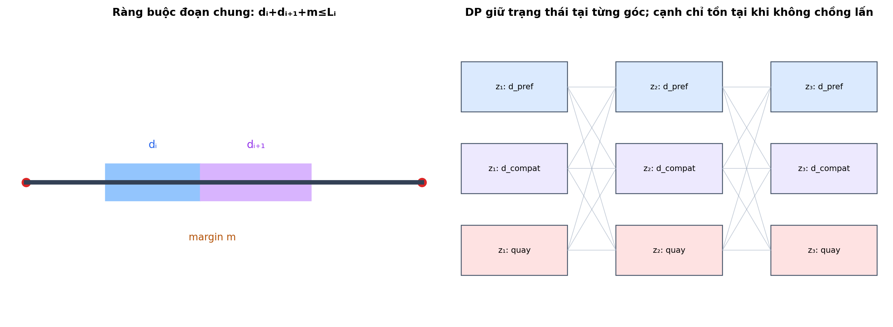
Hai d và ràng buộc không chồng lấn được xử lý toàn cục.
8. Tìm α=q/d thô–tinh
Đánh giá {0,1;0,2;0,3;0,4;0,5}.
Chỉ candidate qua hình học, bánh trong, động học, timing và swept-footprint mới có Eκ hợp lệ.
Chọn Eκ nhỏ nhất; hòa trong 10⁻¹² chọn α nhỏ hơn.
Với winner nội, tinh toàn khoảng giữa hai hàng xóm; winner biên tinh ô biên. Khoảng được chia thành 10 phần và điểm trùng bị loại.
Nếu cả năm coarse thất bại, mới thử {0,15;0,25;0,35;0,45}; nếu có winner thì tinh trong coarse cell chứa nó.
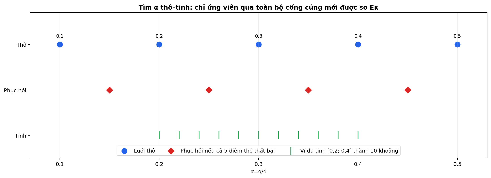
Miền α cố định trong code; 0,35 chỉ là một midpoint recovery, không phải hằng thiết kế.
Eκ chỉ chọn hình dạng α tại cùng một d. Nó không tự quyết định d toàn đường. Kết quả live có 81 transition: α được chọn nằm từ 0,28 đến 0,49, trung bình 0,3267; do đó thuật toán không còn khóa ở 0,35.
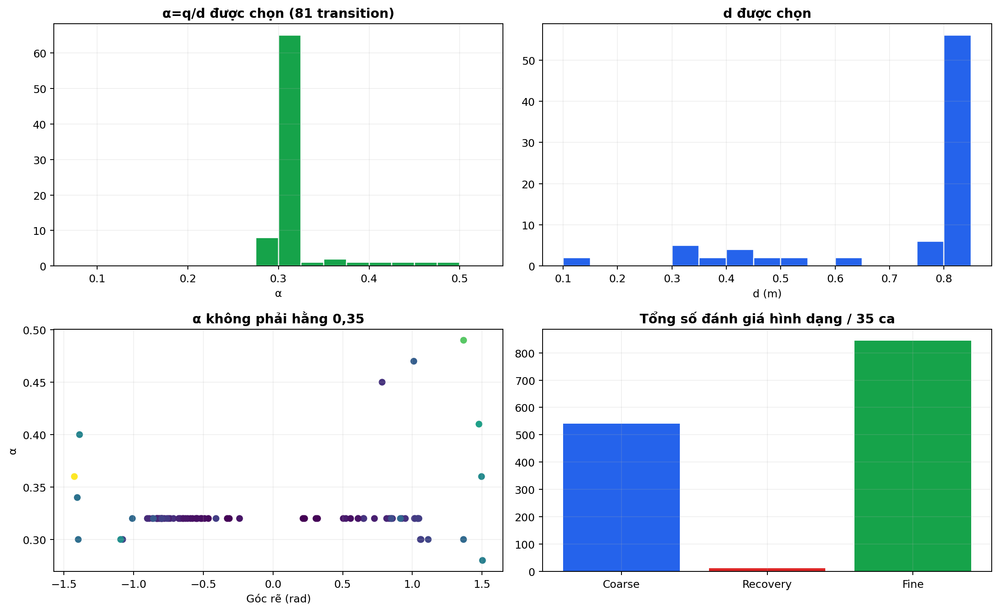
Phân bố d, α và số lần đánh giá lấy trực tiếp từ diagnostics 35 ca.
9. Time gate, hàm điểm cục bộ và trạng thái quay
Mỗi transition được parameterize theo giới hạn vận tốc, bánh xe, gia tốc ngang, tăng/giảm tốc. Các candidate được so trên cùng cửa sổ d lớn nhất. Nhánh transition chỉ mở khi candidate nhanh nhất cộng Δt=0,15 s nhanh hơn thời gian tiến–dừng–quay–đi của trạng thái quay an toàn. Candidate trong slack thời gian mới vào tập cạnh tranh.
risk=min(1, peak_cost/252); angular=min(1,|ω|max/0,80); energy=Eκ/(Eκ+1). Đây là điểm chọn giữa các d đã qua cổng cứng. Nó không biến clearance thành điều kiện LOS và không dùng clearance tối thiểu toàn đường.
10. DP chống chồng lấn và tie-break tất định
Mỗi góc giữ một tập state: transition tại dpref, transition tại dcompat (nếu khác), pass-through hoặc quay tại chỗ. Chuyển giữa state hai góc kề chỉ tồn tại khi dᵢ+dᵢ₊₁+m≤Lᵢ. DP tối thiểu tổng local cost; hòa điểm chọn ít trạng thái quay hơn, sau đó index nhỏ hơn. Vì state chứa trim đã chọn, DP không mắc lỗi gộp hai lời giải cùng đỉnh nhưng có mức chiếm đoạn khác nhau.
11. Ghép output và invariant cuối
Đoạn thẳng được nội suy theo output spacing; transition chèn mẫu Bézier; trạng thái quay tạo hai pose cùng vị trí nhưng khác yaw và chỉ hợp lệ nếu góc lớn hơn ngưỡng 5°. Sau khi ghép, bộ kiểm tra độc lập quét từng khoảng pose với bước ≤max(0,005;½resolution), đồng thời nội suy yaw theo bán kính footprint. Bất kỳ lỗi endpoint, timing, duplicate ngoài ý muốn hoặc sweep nào đều làm SmoothPath thất bại.
12. Thiết kế kiểm thử công bằng và truy vết
Bộ đại diện gồm 7 world, một scenario khó đại diện mỗi world và 5 planner. Trong mỗi ô environment×planner, năm phương pháp nhận cùng một raw path. Start/goal gồm cả x,y,yaw; yaw đầu là hướng an toàn suy ra từ map và yaw đích theo vector start→goal. Vì orientation là một phần bài toán, report không trộn ảnh thử yaw=0 với benchmark chuẩn.
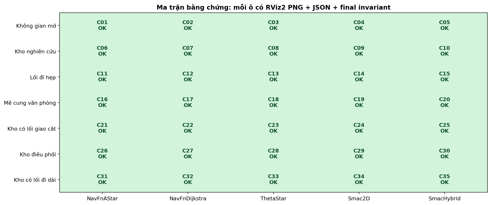
35 ô kiểm thử đều có bằng chứng live và invariant PSTMO.
Planner
Vai trò
Lưu ý công bằng
NavFn A*
Grid A*
Cho phép hành vi phù hợp robot vi sai
NavFn Dijkstra
Grid Dijkstra
Cùng costmap, khác chiến lược tìm kiếm
ThetaStar
Any-angle
Thường tạo chord dài/ít điểm
Smac 2D
Cost-aware 2D
Có light smoother nội tại thuộc planner
Smac Hybrid
Dubins tiến-only
Motion model khác robot pivot; chỉ là baseline planner
Metrics: L là tổng độ dài; Kmax là cực đại |κ|; Eκ=∫κ²ds; T là duration do node so sánh/RViz nhận; clearance dùng footprint 0,44×0,34 m quét trên PGM tĩnh; collision count là số pose mẫu có clearance≤0. PSTMO còn có runtime nội bộ độ phân giải cao.
Ca thất bại duy nhất của smoother baseline. C30 (Warehouse Dispatch × Smac Hybrid planner): Simple bị Nav2 SmoothPath hủy với status=6, code=503 do collision tại x=−4,741290 m, y=3,482165 m, yaw=0,352672 rad. Tọa độ và SHA-256 log được lưu trong failure_evidence_C30.json.
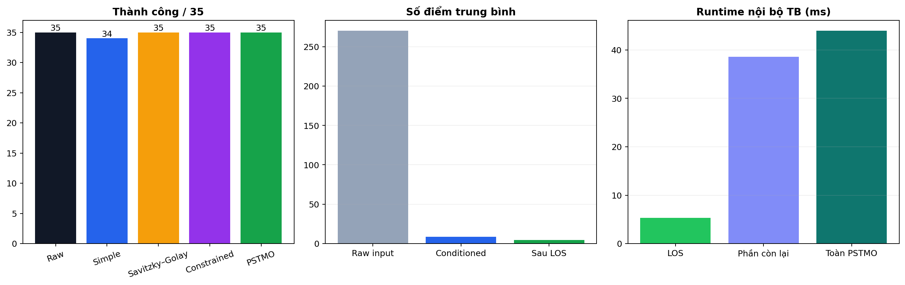
Tỷ lệ thành công, mức giảm số điểm và runtime nội bộ.
13. Phân tích kết quả tổng hợp
Trên 34 nhóm đầy đủ, PSTMO có L=9,9295 m, Kmax=1,0949 1/m, Eκ=1,4737 1/m và T=43,41 ms. So với Simple, Kmax giảm 88,75% và Eκ giảm 91,74%; so với Constrained, Kmax giảm 91,19% và Eκ giảm 96,52%. Lợi ích lớn nhất nằm ở chất lượng hình học và giảm năng lượng độ cong.
Bất lợi thời gian là thực: PSTMO chậm hơn Simple khoảng 42,44 ms, chậm hơn Savitzky–Golay khoảng 43,15 ms và chậm hơn Constrained khoảng 18,97 ms. Timeout 3 s trong benchmark chỉ là timeout do client cấp, không phải thời gian mặc định riêng của smoother và không nên dùng để xóa bỏ bất lợi tương đối này.
Runtime nội bộ PSTMO trên 35 ca trung bình 43,95 ms; LOS chiếm 5,34 ms. Conditioning giảm trung bình 270,0 pose xuống 8,54 điểm neo; LOS còn 4,37 điểm. Lưới recovery chỉ được gọi 12 lần trên toàn bộ 35 ca, cho thấy nhánh phục hồi hiếm.
14. Tại sao clearance giảm nhưng vẫn không collision?
LOS tối ưu lexicographic “xa nhất còn an toàn”, không tối ưu khoảng cách tới vật cản.
Footprint thật là ngưỡng nhị phân: chord sát vật cản nhưng không giao cắt vẫn hợp lệ.
Conditioning/LOS thay corridor hình học; các smoother ROS thường giữ gần raw corridor được inflation dẫn hướng.
Transition có thể cắt phía trong góc để giảm L và Eκ; cổng footprint giữ không va chạm nhưng không yêu cầu reserve 0,15 m.
Inflation peak-cost chỉ tham gia chọn giữa số ít d sau time gate, không thay quy tắc tham lam LOS.
Do đó clearance min trung bình PSTMO 0,0395 m thấp hơn Constrained 0,2095 m trên các ca thành công, nhưng cả 35 ca PSTMO có collision sample count bằng 0. Muốn tăng reserve cần một mục tiêu/constraint mới và benchmark lại; không nên gọi footprint “phải vừa” rồi bỏ qua hoàn toàn việc báo cáo khoảng dự phòng.
15. Bằng chứng theo từng môi trường và từng planner
15.1. Không gian mở
Vật cản thưa, giúp tách tác động của thuật toán khỏi hiệu ứng hành lang hẹp.
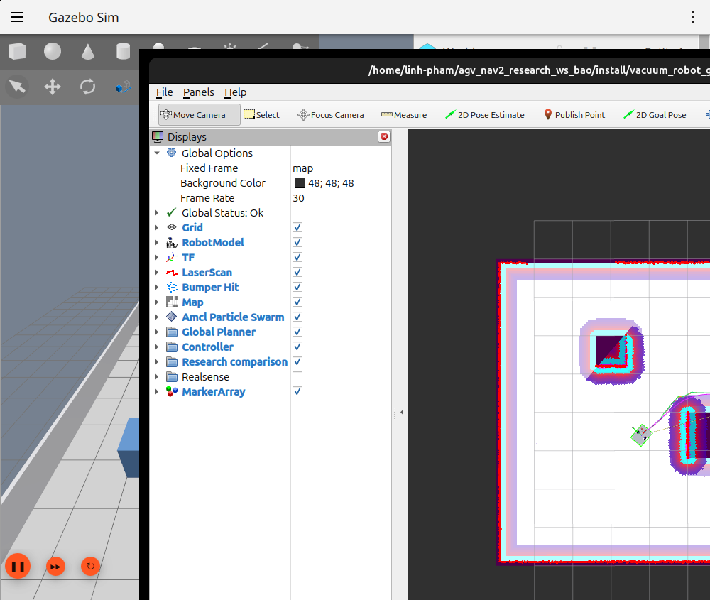
Gazebo world thật — Không gian mở.
C01 — NavFnAStar — Vòng qua khối trung tâm
C01: ảnh RViz2 gốc, phóng to exact ROS paths và bảng metric cùng ca.
So với baseline ROS có Kmax thấp nhất (Constrained), Kmax của PSTMO giảm 97.19%.
So với baseline ROS có Eκ thấp nhất (Simple), Eκ của PSTMO giảm 97.88%.
So với baseline ROS ngắn nhất (Simple), chiều dài PSTMO giảm 4.51%.
Clearance footprint tối thiểu hậu kiểm của PSTMO là 0.123 m; số mẫu va chạm = 0.
Chẩn đoán: raw 176 → conditioned 6 → LOS 4 điểm; 2 transition, 0 quay tại chỗ, 52 đánh giá hình dạng, runtime nội bộ 56.34 ms.
C02 — NavFnDijkstra — Vòng qua khối trung tâm
C02: ảnh RViz2 gốc, phóng to exact ROS paths và bảng metric cùng ca.
So với baseline ROS có Kmax thấp nhất (Simple), Kmax của PSTMO giảm 76.45%.
So với baseline ROS có Eκ thấp nhất (Simple), Eκ của PSTMO giảm 67.62%.
So với baseline ROS ngắn nhất (Simple), chiều dài PSTMO giảm 5.34%.
Clearance footprint tối thiểu hậu kiểm của PSTMO là 0.065 m; số mẫu va chạm = 0.
Chẩn đoán: raw 173 → conditioned 5 → LOS 4 điểm; 2 transition, 0 quay tại chỗ, 26 đánh giá hình dạng, runtime nội bộ 33.02 ms.
C03 — ThetaStar — Vòng qua khối trung tâm
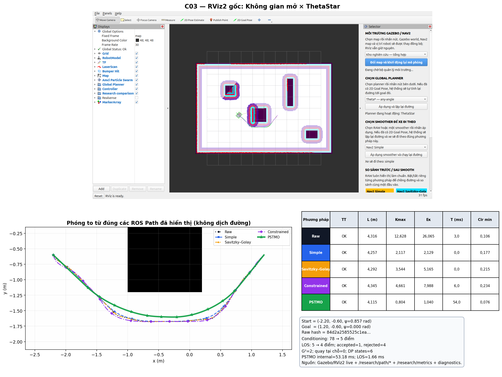
C03: ảnh RViz2 gốc, phóng to exact ROS paths và bảng metric cùng ca.
So với baseline ROS có Kmax thấp nhất (Simple), Kmax của PSTMO giảm 62.02%.
So với baseline ROS có Eκ thấp nhất (Simple), Eκ của PSTMO giảm 51.17%.
So với baseline ROS ngắn nhất (Simple), chiều dài PSTMO giảm 3.32%.
Clearance footprint tối thiểu hậu kiểm của PSTMO là 0.076 m; số mẫu va chạm = 0.
Chẩn đoán: raw 78 → conditioned 5 → LOS 4 điểm; 2 transition, 0 quay tại chỗ, 52 đánh giá hình dạng, runtime nội bộ 53.18 ms.
C04 — Smac2D — Vòng qua khối trung tâm
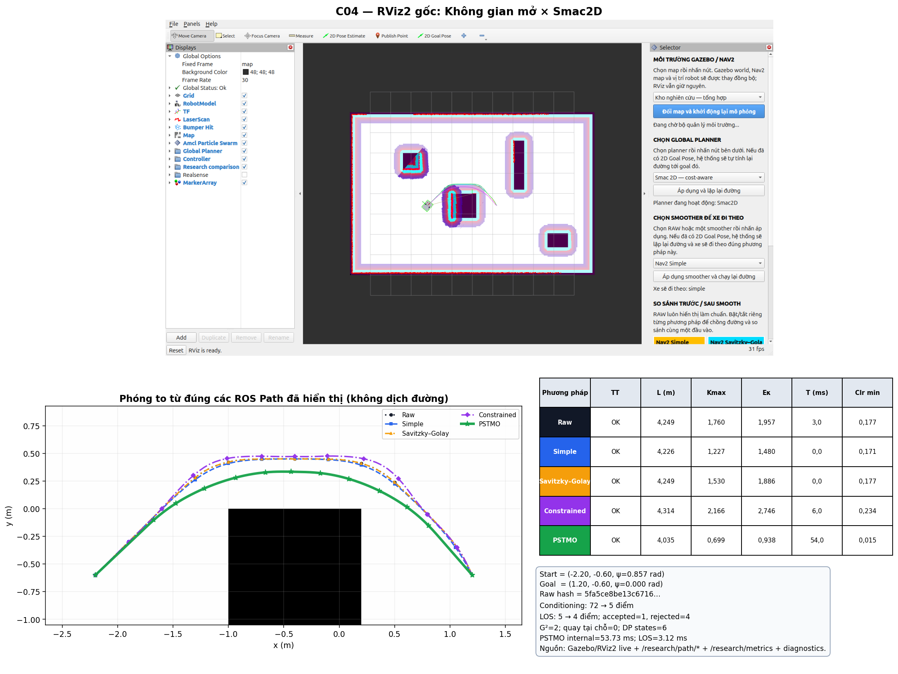
C04: ảnh RViz2 gốc, phóng to exact ROS paths và bảng metric cùng ca.
So với baseline ROS có Kmax thấp nhất (Simple), Kmax của PSTMO giảm 43.06%.
So với baseline ROS có Eκ thấp nhất (Simple), Eκ của PSTMO giảm 36.58%.
So với baseline ROS ngắn nhất (Simple), chiều dài PSTMO giảm 4.52%.
Clearance footprint tối thiểu hậu kiểm của PSTMO là 0.015 m; số mẫu va chạm = 0.
Chẩn đoán: raw 72 → conditioned 5 → LOS 4 điểm; 2 transition, 0 quay tại chỗ, 52 đánh giá hình dạng, runtime nội bộ 53.73 ms.
C05 — SmacHybrid — Vòng qua khối trung tâm
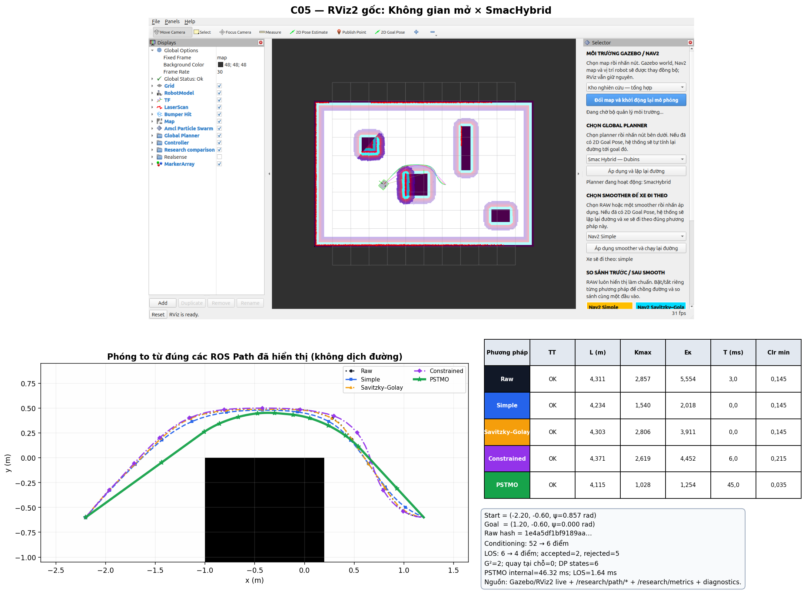
C05: ảnh RViz2 gốc, phóng to exact ROS paths và bảng metric cùng ca.
So với baseline ROS có Kmax thấp nhất (Simple), Kmax của PSTMO giảm 33.22%.
So với baseline ROS có Eκ thấp nhất (Simple), Eκ của PSTMO giảm 37.87%.
So với baseline ROS ngắn nhất (Simple), chiều dài PSTMO giảm 2.80%.
Clearance footprint tối thiểu hậu kiểm của PSTMO là 0.035 m; số mẫu va chạm = 0.
Chẩn đoán: raw 52 → conditioned 6 → LOS 4 điểm; 2 transition, 0 quay tại chỗ, 52 đánh giá hình dạng, runtime nội bộ 46.32 ms.
15.2. Kho nghiên cứu
Kệ, thùng hàng, đường chéo và góc vuông cùng xuất hiện trong một bản đồ tổng hợp.
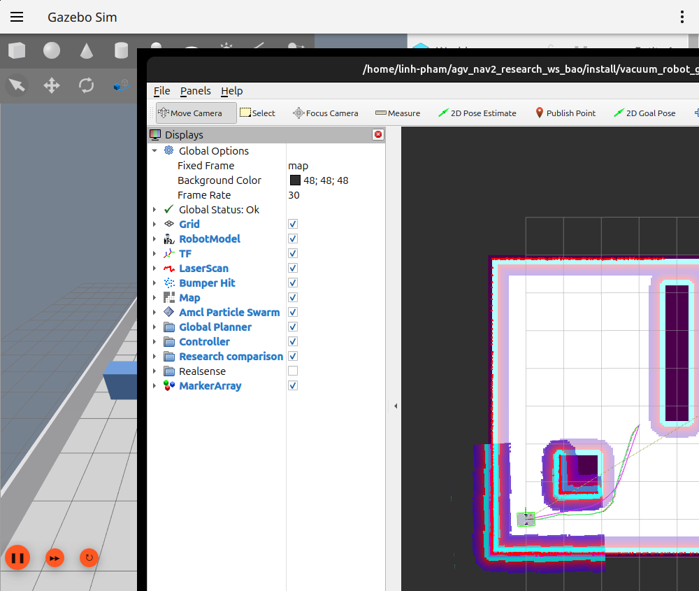
Gazebo world thật — Kho nghiên cứu.
C06 — NavFnAStar — Đường chéo góc trái dưới
C06: ảnh RViz2 gốc, phóng to exact ROS paths và bảng metric cùng ca.
So với baseline ROS có Kmax thấp nhất (Simple), Kmax của PSTMO giảm 78.55%.
So với baseline ROS có Eκ thấp nhất (Simple), Eκ của PSTMO giảm 84.10%.
So với baseline ROS ngắn nhất (Simple), chiều dài PSTMO giảm 4.80%.
Clearance footprint tối thiểu hậu kiểm của PSTMO là 0.035 m; số mẫu va chạm = 0.
Chẩn đoán: raw 182 → conditioned 5 → LOS 3 điểm; 1 transition, 0 quay tại chỗ, 13 đánh giá hình dạng, runtime nội bộ 16.29 ms.
C07 — NavFnDijkstra — Đường chéo góc trái dưới
C07: ảnh RViz2 gốc, phóng to exact ROS paths và bảng metric cùng ca.
So với baseline ROS có Kmax thấp nhất (Simple), Kmax của PSTMO giảm 81.27%.
So với baseline ROS có Eκ thấp nhất (Simple), Eκ của PSTMO giảm 83.13%.
So với baseline ROS ngắn nhất (Simple), chiều dài PSTMO giảm 4.45%.
Clearance footprint tối thiểu hậu kiểm của PSTMO là 0.065 m; số mẫu va chạm = 0.
Chẩn đoán: raw 184 → conditioned 4 → LOS 3 điểm; 1 transition, 0 quay tại chỗ, 13 đánh giá hình dạng, runtime nội bộ 16.96 ms.
C08 — ThetaStar — Đường chéo góc trái dưới
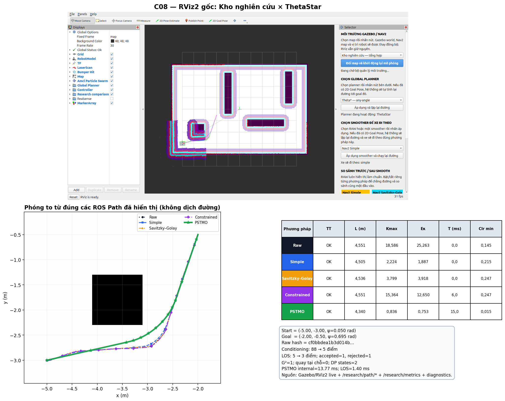
C08: ảnh RViz2 gốc, phóng to exact ROS paths và bảng metric cùng ca.
So với baseline ROS có Kmax thấp nhất (Simple), Kmax của PSTMO giảm 62.39%.
So với baseline ROS có Eκ thấp nhất (Simple), Eκ của PSTMO giảm 60.13%.
So với baseline ROS ngắn nhất (Simple), chiều dài PSTMO giảm 3.66%.
Clearance footprint tối thiểu hậu kiểm của PSTMO là 0.015 m; số mẫu va chạm = 0.
Chẩn đoán: raw 88 → conditioned 5 → LOS 3 điểm; 1 transition, 0 quay tại chỗ, 13 đánh giá hình dạng, runtime nội bộ 13.77 ms.
C09 — Smac2D — Đường chéo góc trái dưới
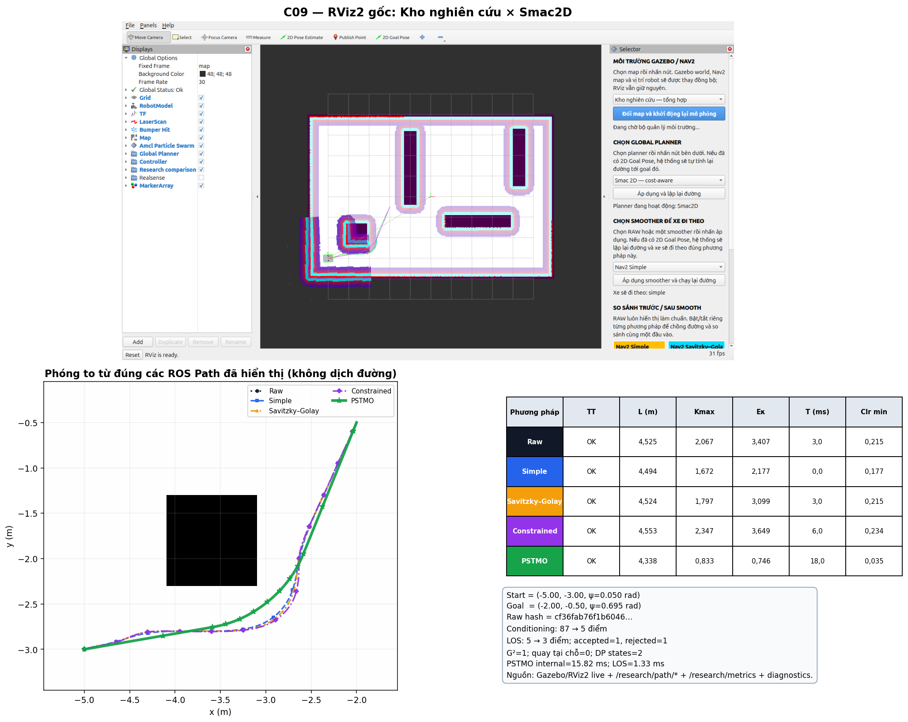
C09: ảnh RViz2 gốc, phóng to exact ROS paths và bảng metric cùng ca.
So với baseline ROS có Kmax thấp nhất (Simple), Kmax của PSTMO giảm 50.19%.
So với baseline ROS có Eκ thấp nhất (Simple), Eκ của PSTMO giảm 65.71%.
So với baseline ROS ngắn nhất (Simple), chiều dài PSTMO giảm 3.46%.
Clearance footprint tối thiểu hậu kiểm của PSTMO là 0.035 m; số mẫu va chạm = 0.
Chẩn đoán: raw 87 → conditioned 5 → LOS 3 điểm; 1 transition, 0 quay tại chỗ, 13 đánh giá hình dạng, runtime nội bộ 15.82 ms.
C10 — SmacHybrid — Đường chéo góc trái dưới
C10: ảnh RViz2 gốc, phóng to exact ROS paths và bảng metric cùng ca.
So với baseline ROS có Kmax thấp nhất (Simple), Kmax của PSTMO giảm 20.83%.
So với baseline ROS có Eκ thấp nhất (Simple), Eκ của PSTMO giảm 37.76%.
So với baseline ROS ngắn nhất (Simple), chiều dài PSTMO giảm 4.78%.
Clearance footprint tối thiểu hậu kiểm của PSTMO là 0.035 m; số mẫu va chạm = 0.
Chẩn đoán: raw 56 → conditioned 5 → LOS 3 điểm; 1 transition, 0 quay tại chỗ, 13 đánh giá hình dạng, runtime nội bộ 16.06 ms.
15.3. Lối đi hẹp
Các dãy kệ tạo hành lang ngoằn ngoèo; footprint và các góc liên tiếp là yếu tố chi phối.
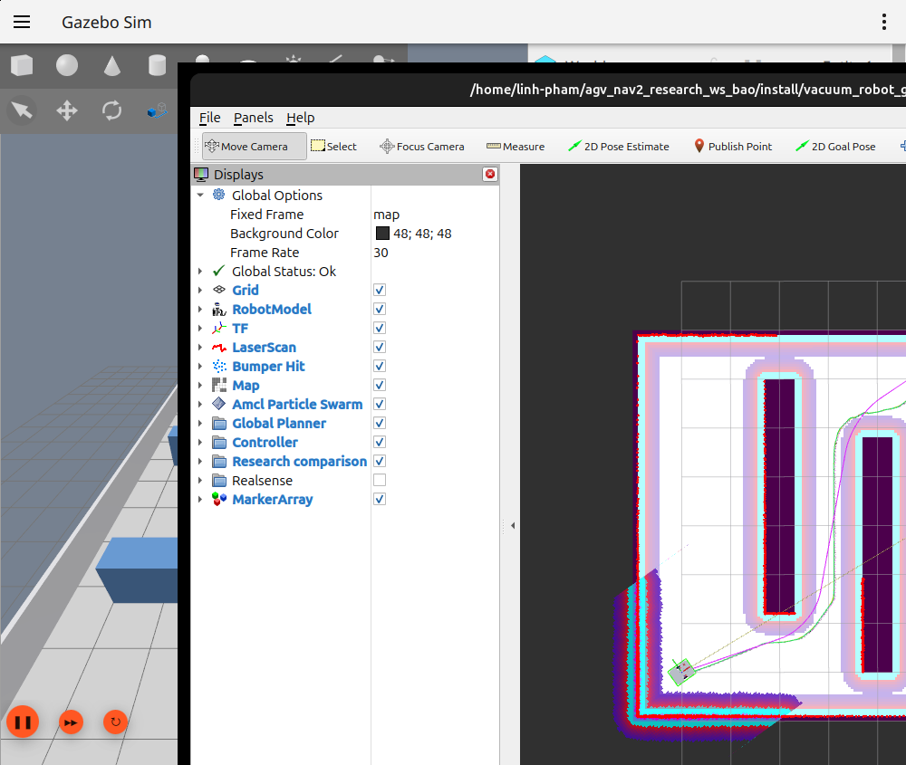
Gazebo world thật — Lối đi hẹp.
C11 — NavFnAStar — Luồn Tây Nam–Đông Bắc
C11: ảnh RViz2 gốc, phóng to exact ROS paths và bảng metric cùng ca.
So với baseline ROS có Kmax thấp nhất (Simple), Kmax của PSTMO giảm 90.18%.
So với baseline ROS có Eκ thấp nhất (Simple), Eκ của PSTMO giảm 93.23%.
So với baseline ROS ngắn nhất (Simple), chiều dài PSTMO giảm 4.59%.
Clearance footprint tối thiểu hậu kiểm của PSTMO là 0.065 m; số mẫu va chạm = 0.
Chẩn đoán: raw 576 → conditioned 14 → LOS 5 điểm; 3 transition, 0 quay tại chỗ, 39 đánh giá hình dạng, runtime nội bộ 60.41 ms.
C12 — NavFnDijkstra — Luồn Tây Nam–Đông Bắc
C12: ảnh RViz2 gốc, phóng to exact ROS paths và bảng metric cùng ca.
So với baseline ROS có Kmax thấp nhất (Simple), Kmax của PSTMO giảm 80.07%.
So với baseline ROS có Eκ thấp nhất (Simple), Eκ của PSTMO giảm 79.88%.
So với baseline ROS ngắn nhất (Simple), chiều dài PSTMO giảm 3.22%.
Clearance footprint tối thiểu hậu kiểm của PSTMO là 0.076 m; số mẫu va chạm = 0.
Chẩn đoán: raw 572 → conditioned 10 → LOS 5 điểm; 3 transition, 0 quay tại chỗ, 39 đánh giá hình dạng, runtime nội bộ 48.56 ms.
C13 — ThetaStar — Luồn Tây Nam–Đông Bắc
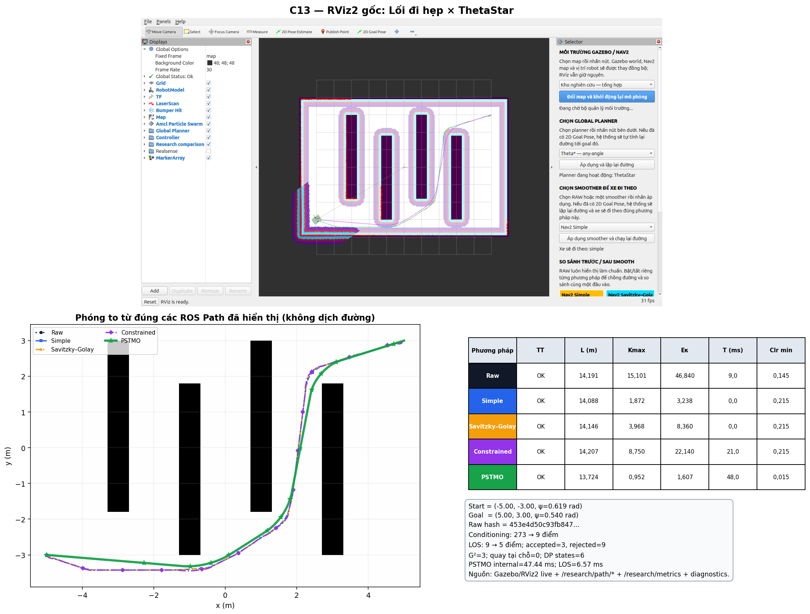
C13: ảnh RViz2 gốc, phóng to exact ROS paths và bảng metric cùng ca.
So với baseline ROS có Kmax thấp nhất (Simple), Kmax của PSTMO giảm 49.14%.
So với baseline ROS có Eκ thấp nhất (Simple), Eκ của PSTMO giảm 50.37%.
So với baseline ROS ngắn nhất (Simple), chiều dài PSTMO giảm 2.58%.
Clearance footprint tối thiểu hậu kiểm của PSTMO là 0.015 m; số mẫu va chạm = 0.
Chẩn đoán: raw 273 → conditioned 9 → LOS 5 điểm; 3 transition, 0 quay tại chỗ, 39 đánh giá hình dạng, runtime nội bộ 47.44 ms.
C14 — Smac2D — Luồn Tây Nam–Đông Bắc
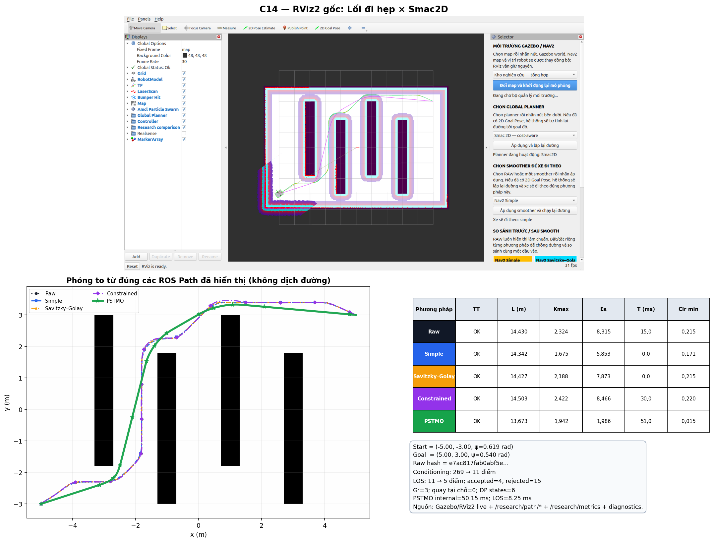
C14: ảnh RViz2 gốc, phóng to exact ROS paths và bảng metric cùng ca.
So với baseline ROS có Kmax thấp nhất (Simple), Kmax của PSTMO tăng 15.91%.
So với baseline ROS có Eκ thấp nhất (Simple), Eκ của PSTMO giảm 66.07%.
So với baseline ROS ngắn nhất (Simple), chiều dài PSTMO giảm 4.66%.
Clearance footprint tối thiểu hậu kiểm của PSTMO là 0.015 m; số mẫu va chạm = 0.
Chẩn đoán: raw 269 → conditioned 11 → LOS 5 điểm; 3 transition, 0 quay tại chỗ, 40 đánh giá hình dạng, runtime nội bộ 50.15 ms.
C15 — SmacHybrid — Luồn Tây Nam–Đông Bắc
C15: ảnh RViz2 gốc, phóng to exact ROS paths và bảng metric cùng ca.
So với baseline ROS có Kmax thấp nhất (Simple), Kmax của PSTMO giảm 14.26%.
So với baseline ROS có Eκ thấp nhất (Simple), Eκ của PSTMO giảm 47.53%.
So với baseline ROS ngắn nhất (Simple), chiều dài PSTMO giảm 3.21%.
Clearance footprint tối thiểu hậu kiểm của PSTMO là 0.015 m; số mẫu va chạm = 0.
Chẩn đoán: raw 162 → conditioned 15 → LOS 5 điểm; 3 transition, 0 quay tại chỗ, 39 đánh giá hình dạng, runtime nội bộ 53.55 ms.
15.4. Mê cung văn phòng
Vách ngăn và cửa lệch tạo chuỗi góc ngắn, phù hợp kiểm tra ràng buộc không chồng lấn.
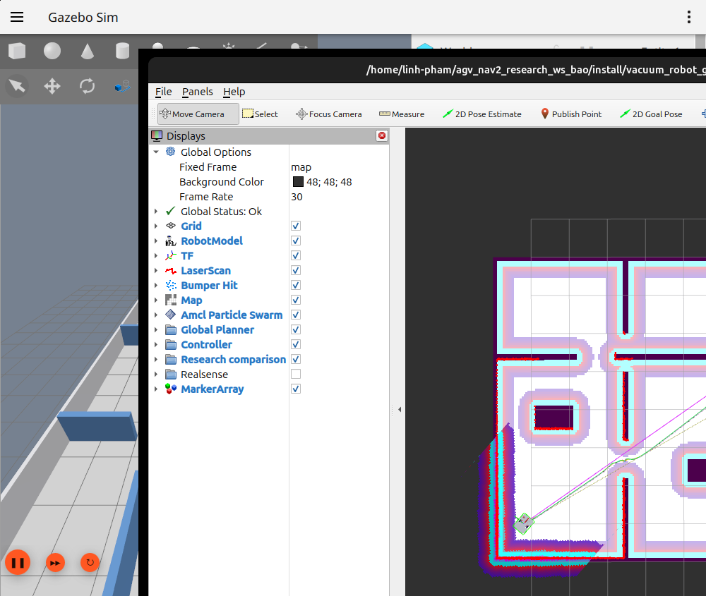
Gazebo world thật — Mê cung văn phòng.
C16 — NavFnAStar — Đường chéo dài văn phòng
C16: ảnh RViz2 gốc, phóng to exact ROS paths và bảng metric cùng ca.
So với baseline ROS có Kmax thấp nhất (Simple), Kmax của PSTMO giảm 98.46%.
So với baseline ROS có Eκ thấp nhất (Simple), Eκ của PSTMO giảm 99.44%.
So với baseline ROS ngắn nhất (Simple), chiều dài PSTMO giảm 3.00%.
Clearance footprint tối thiểu hậu kiểm của PSTMO là 0.035 m; số mẫu va chạm = 0.
Chẩn đoán: raw 524 → conditioned 14 → LOS 5 điểm; 3 transition, 0 quay tại chỗ, 65 đánh giá hình dạng, runtime nội bộ 84.64 ms.
C17 — NavFnDijkstra — Đường chéo dài văn phòng
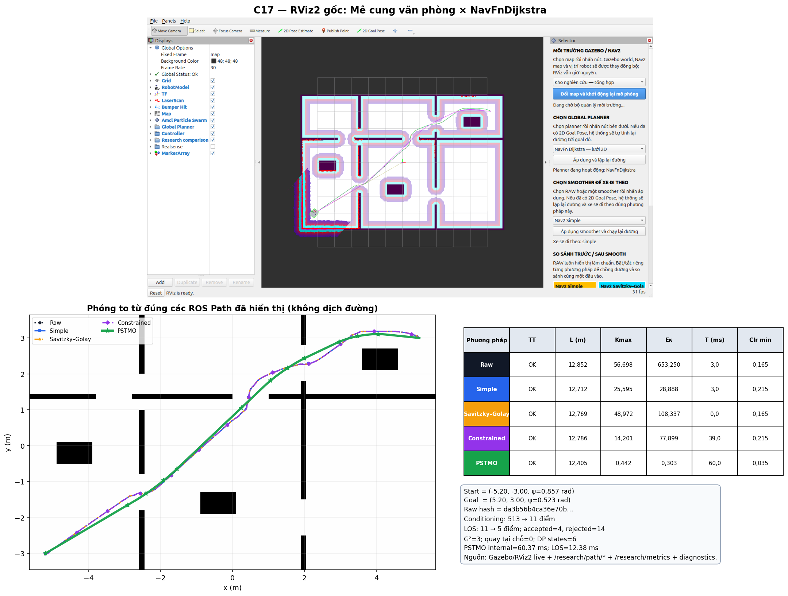
C17: ảnh RViz2 gốc, phóng to exact ROS paths và bảng metric cùng ca.
So với baseline ROS có Kmax thấp nhất (Constrained), Kmax của PSTMO giảm 96.89%.
So với baseline ROS có Eκ thấp nhất (Simple), Eκ của PSTMO giảm 98.95%.
So với baseline ROS ngắn nhất (Simple), chiều dài PSTMO giảm 2.42%.
Clearance footprint tối thiểu hậu kiểm của PSTMO là 0.035 m; số mẫu va chạm = 0.
Chẩn đoán: raw 513 → conditioned 11 → LOS 5 điểm; 3 transition, 0 quay tại chỗ, 39 đánh giá hình dạng, runtime nội bộ 60.37 ms.
C18 — ThetaStar — Đường chéo dài văn phòng
C18: ảnh RViz2 gốc, phóng to exact ROS paths và bảng metric cùng ca.
So với baseline ROS có Kmax thấp nhất (Simple), Kmax của PSTMO giảm 75.58%.
So với baseline ROS có Eκ thấp nhất (Simple), Eκ của PSTMO giảm 88.46%.
So với baseline ROS ngắn nhất (Simple), chiều dài PSTMO giảm 1.28%.
Clearance footprint tối thiểu hậu kiểm của PSTMO là 0.076 m; số mẫu va chạm = 0.
Chẩn đoán: raw 220 → conditioned 12 → LOS 5 điểm; 3 transition, 0 quay tại chỗ, 39 đánh giá hình dạng, runtime nội bộ 59.36 ms.
C19 — Smac2D — Đường chéo dài văn phòng
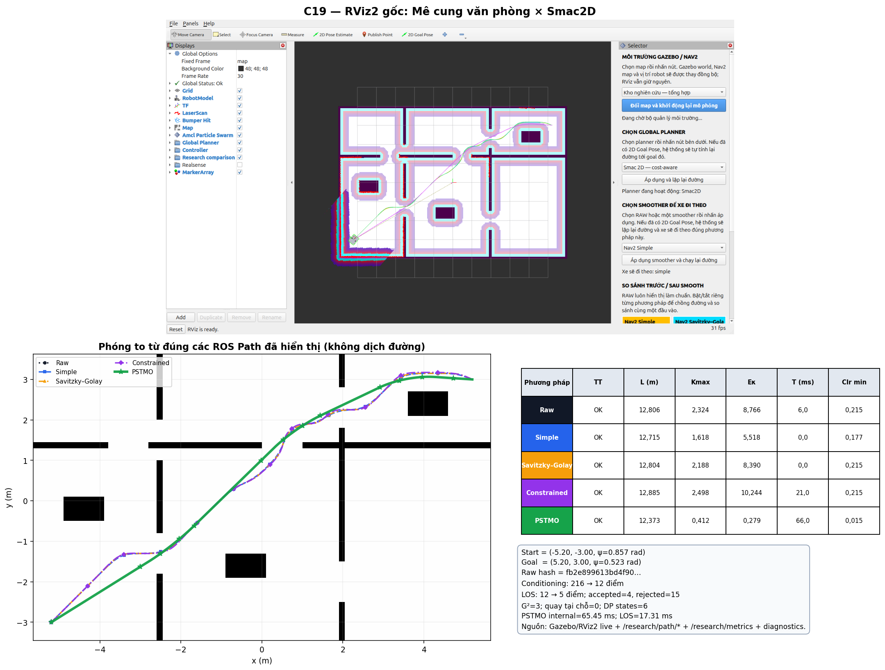
C19: ảnh RViz2 gốc, phóng to exact ROS paths và bảng metric cùng ca.
So với baseline ROS có Kmax thấp nhất (Simple), Kmax của PSTMO giảm 74.56%.
So với baseline ROS có Eκ thấp nhất (Simple), Eκ của PSTMO giảm 94.95%.
So với baseline ROS ngắn nhất (Simple), chiều dài PSTMO giảm 2.69%.
Clearance footprint tối thiểu hậu kiểm của PSTMO là 0.015 m; số mẫu va chạm = 0.
Chẩn đoán: raw 216 → conditioned 12 → LOS 5 điểm; 3 transition, 0 quay tại chỗ, 39 đánh giá hình dạng, runtime nội bộ 65.45 ms.
C20 — SmacHybrid — Đường chéo dài văn phòng
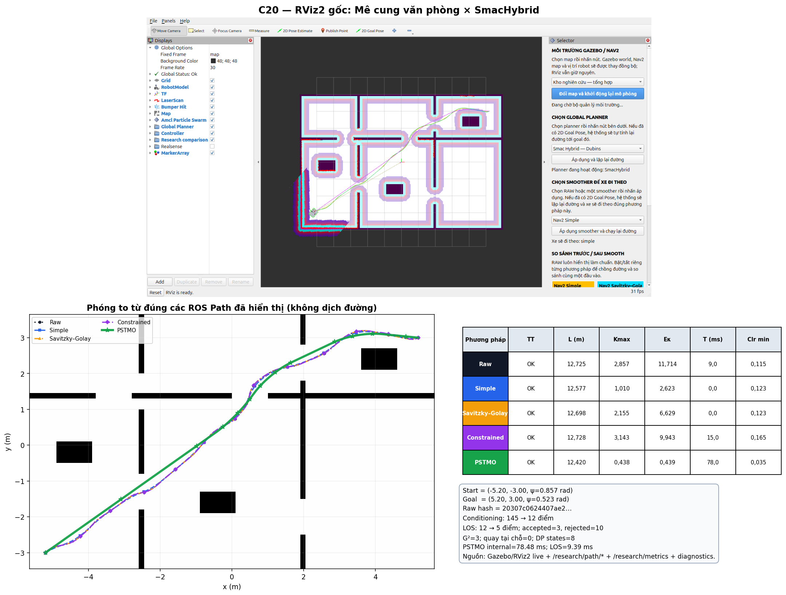
C20: ảnh RViz2 gốc, phóng to exact ROS paths và bảng metric cùng ca.
So với baseline ROS có Kmax thấp nhất (Simple), Kmax của PSTMO giảm 56.69%.
So với baseline ROS có Eκ thấp nhất (Simple), Eκ của PSTMO giảm 83.28%.
So với baseline ROS ngắn nhất (Simple), chiều dài PSTMO giảm 1.25%.
Clearance footprint tối thiểu hậu kiểm của PSTMO là 0.035 m; số mẫu va chạm = 0.
Chẩn đoán: raw 145 → conditioned 12 → LOS 5 điểm; 3 transition, 0 quay tại chỗ, 65 đánh giá hình dạng, runtime nội bộ 78.48 ms.
15.5. Kho có lối giao cắt
Đường dọc–ngang giao nhau, làm rõ transition vào và ra khỏi lối giao cắt.
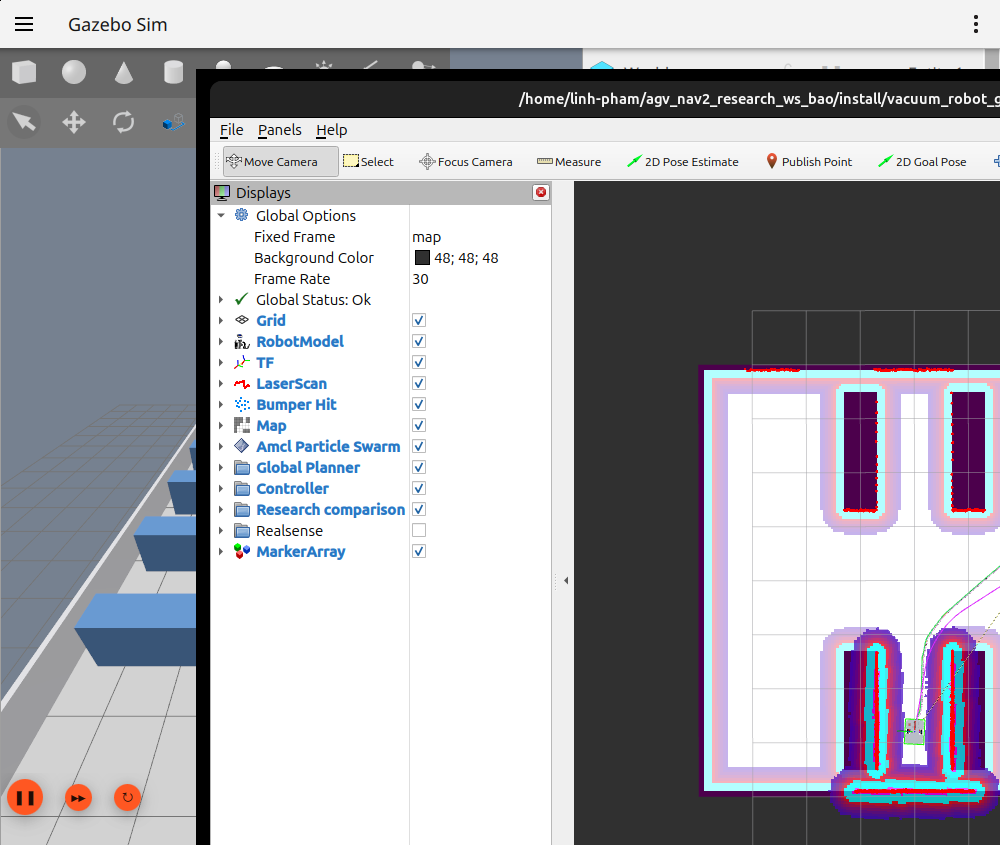
Gazebo world thật — Kho có lối giao cắt.
C21 — NavFnAStar — Chuyển lối tại giao cắt
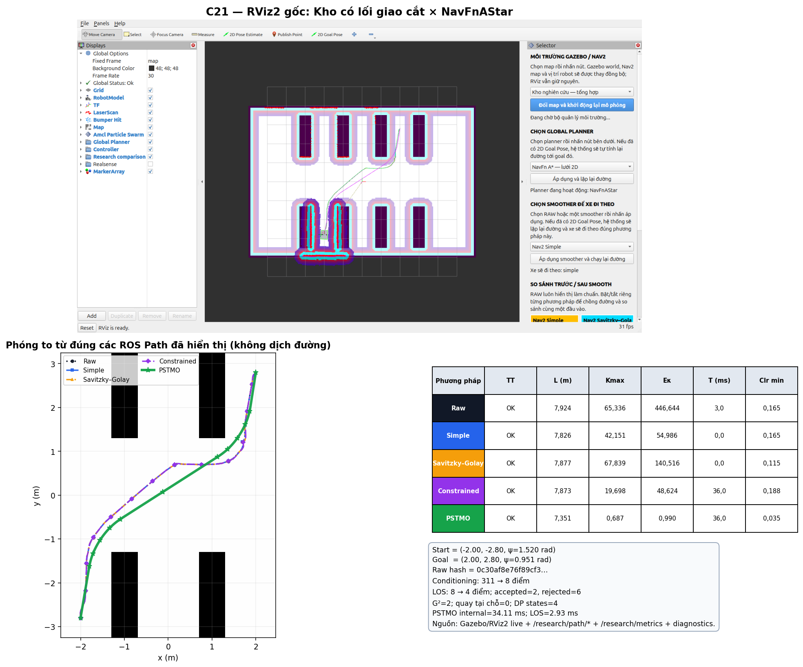
C21: ảnh RViz2 gốc, phóng to exact ROS paths và bảng metric cùng ca.
So với baseline ROS có Kmax thấp nhất (Constrained), Kmax của PSTMO giảm 96.51%.
So với baseline ROS có Eκ thấp nhất (Constrained), Eκ của PSTMO giảm 97.96%.
So với baseline ROS ngắn nhất (Simple), chiều dài PSTMO giảm 6.07%.
Clearance footprint tối thiểu hậu kiểm của PSTMO là 0.035 m; số mẫu va chạm = 0.
Chẩn đoán: raw 311 → conditioned 8 → LOS 4 điểm; 2 transition, 0 quay tại chỗ, 26 đánh giá hình dạng, runtime nội bộ 34.11 ms.
C22 — NavFnDijkstra — Chuyển lối tại giao cắt
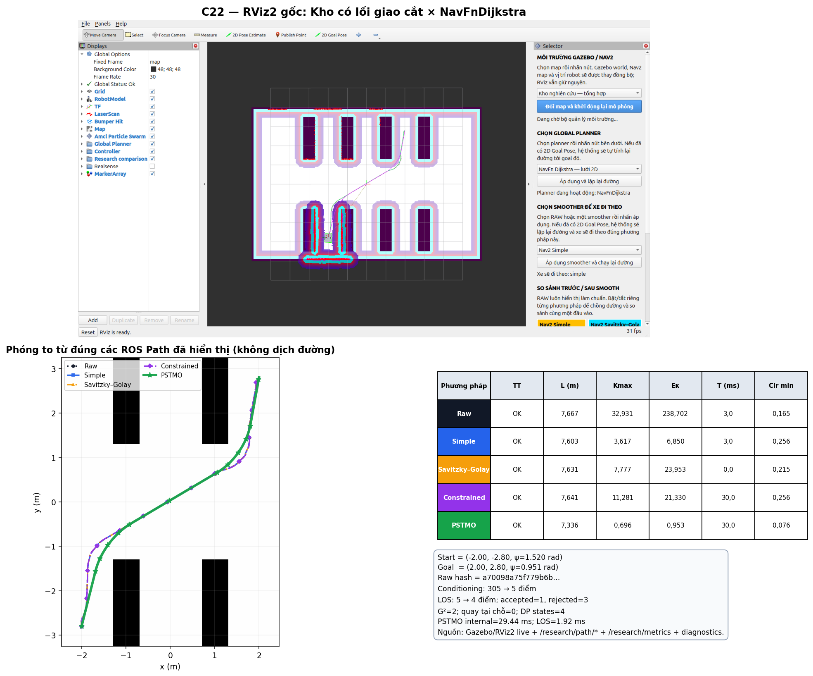
C22: ảnh RViz2 gốc, phóng to exact ROS paths và bảng metric cùng ca.
So với baseline ROS có Kmax thấp nhất (Simple), Kmax của PSTMO giảm 80.75%.
So với baseline ROS có Eκ thấp nhất (Simple), Eκ của PSTMO giảm 86.10%.
So với baseline ROS ngắn nhất (Simple), chiều dài PSTMO giảm 3.51%.
Clearance footprint tối thiểu hậu kiểm của PSTMO là 0.076 m; số mẫu va chạm = 0.
Chẩn đoán: raw 305 → conditioned 5 → LOS 4 điểm; 2 transition, 0 quay tại chỗ, 26 đánh giá hình dạng, runtime nội bộ 29.44 ms.
C23 — ThetaStar — Chuyển lối tại giao cắt
C23: ảnh RViz2 gốc, phóng to exact ROS paths và bảng metric cùng ca.
So với baseline ROS có Kmax thấp nhất (Simple), Kmax của PSTMO giảm 61.81%.
So với baseline ROS có Eκ thấp nhất (Simple), Eκ của PSTMO giảm 53.98%.
So với baseline ROS ngắn nhất (Simple), chiều dài PSTMO giảm 2.16%.
Clearance footprint tối thiểu hậu kiểm của PSTMO là 0.106 m; số mẫu va chạm = 0.
Chẩn đoán: raw 138 → conditioned 6 → LOS 4 điểm; 2 transition, 0 quay tại chỗ, 26 đánh giá hình dạng, runtime nội bộ 30.39 ms.
C24 — Smac2D — Chuyển lối tại giao cắt
C24: ảnh RViz2 gốc, phóng to exact ROS paths và bảng metric cùng ca.
So với baseline ROS có Kmax thấp nhất (Simple), Kmax của PSTMO giảm 25.65%.
So với baseline ROS có Eκ thấp nhất (Simple), Eκ của PSTMO giảm 72.56%.
So với baseline ROS ngắn nhất (Simple), chiều dài PSTMO giảm 4.75%.
Clearance footprint tối thiểu hậu kiểm của PSTMO là 0.015 m; số mẫu va chạm = 0.
Chẩn đoán: raw 137 → conditioned 8 → LOS 4 điểm; 2 transition, 0 quay tại chỗ, 27 đánh giá hình dạng, runtime nội bộ 30.87 ms.
C25 — SmacHybrid — Chuyển lối tại giao cắt
C25: ảnh RViz2 gốc, phóng to exact ROS paths và bảng metric cùng ca.
So với baseline ROS có Kmax thấp nhất (Simple), Kmax của PSTMO giảm 49.01%.
So với baseline ROS có Eκ thấp nhất (Simple), Eκ của PSTMO giảm 41.16%.
So với baseline ROS ngắn nhất (Simple), chiều dài PSTMO giảm 2.94%.
Clearance footprint tối thiểu hậu kiểm của PSTMO là 0.123 m; số mẫu va chạm = 0.
Chẩn đoán: raw 90 → conditioned 7 → LOS 4 điểm; 2 transition, 0 quay tại chỗ, 26 đánh giá hình dạng, runtime nội bộ 36.60 ms.
15.6. Kho điều phối
Tuyến dài qua vùng staging và dock, có mật độ vật cản cao nhất trong bộ đại diện.
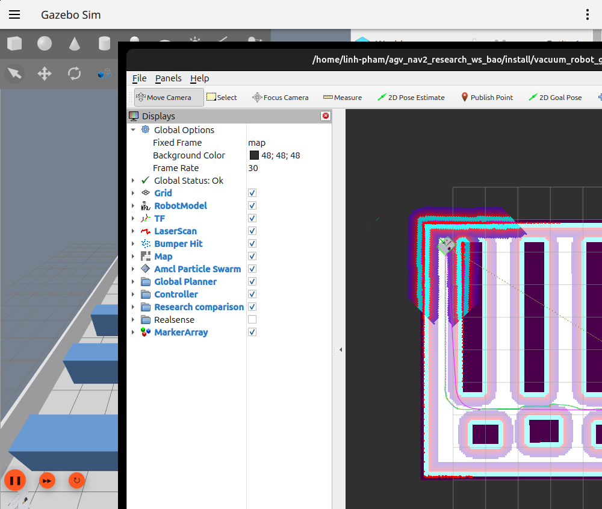
Gazebo world thật — Kho điều phối.
C26 — NavFnAStar — Tuyến bổ sung hàng toàn kho
C26: ảnh RViz2 gốc, phóng to exact ROS paths và bảng metric cùng ca.
So với baseline ROS có Kmax thấp nhất (Constrained), Kmax của PSTMO giảm 95.13%.
So với baseline ROS có Eκ thấp nhất (Simple), Eκ của PSTMO giảm 96.33%.
So với baseline ROS ngắn nhất (Simple), chiều dài PSTMO giảm 3.86%.
Clearance footprint tối thiểu hậu kiểm của PSTMO là 0.015 m; số mẫu va chạm = 0.
Chẩn đoán: raw 626 → conditioned 12 → LOS 5 điểm; 3 transition, 0 quay tại chỗ, 65 đánh giá hình dạng, runtime nội bộ 57.17 ms.
C27 — NavFnDijkstra — Tuyến bổ sung hàng toàn kho
C27: ảnh RViz2 gốc, phóng to exact ROS paths và bảng metric cùng ca.
So với baseline ROS có Kmax thấp nhất (Constrained), Kmax của PSTMO giảm 82.41%.
So với baseline ROS có Eκ thấp nhất (Simple), Eκ của PSTMO giảm 87.96%.
So với baseline ROS ngắn nhất (Simple), chiều dài PSTMO giảm 3.67%.
Clearance footprint tối thiểu hậu kiểm của PSTMO là 0.015 m; số mẫu va chạm = 0.
Chẩn đoán: raw 624 → conditioned 10 → LOS 5 điểm; 3 transition, 0 quay tại chỗ, 65 đánh giá hình dạng, runtime nội bộ 50.18 ms.
C28 — ThetaStar — Tuyến bổ sung hàng toàn kho
C28: ảnh RViz2 gốc, phóng to exact ROS paths và bảng metric cùng ca.
So với baseline ROS có Kmax thấp nhất (Simple), Kmax của PSTMO giảm 49.96%.
So với baseline ROS có Eκ thấp nhất (Simple), Eκ của PSTMO giảm 74.12%.
So với baseline ROS ngắn nhất (Simple), chiều dài PSTMO giảm 0.57%.
Clearance footprint tối thiểu hậu kiểm của PSTMO là 0.015 m; số mẫu va chạm = 0.
Chẩn đoán: raw 298 → conditioned 9 → LOS 5 điểm; 2 transition, 1 quay tại chỗ, 61 đánh giá hình dạng, runtime nội bộ 50.93 ms.
C29 — Smac2D — Tuyến bổ sung hàng toàn kho
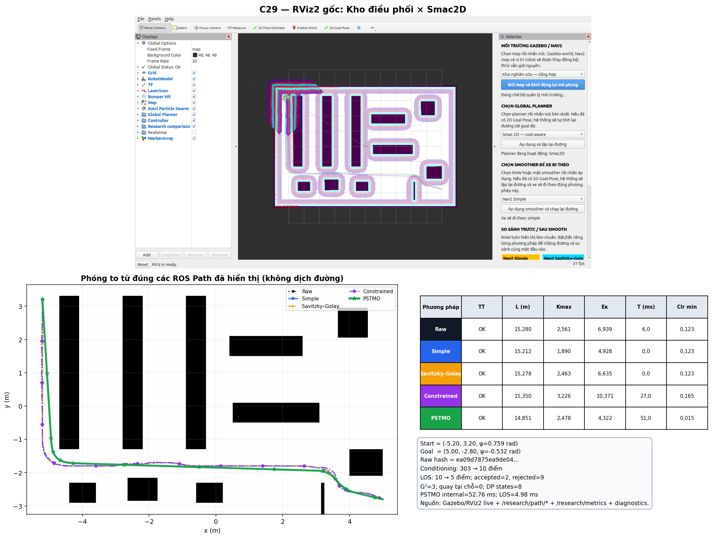
C29: ảnh RViz2 gốc, phóng to exact ROS paths và bảng metric cùng ca.
So với baseline ROS có Kmax thấp nhất (Simple), Kmax của PSTMO tăng 31.14%.
So với baseline ROS có Eκ thấp nhất (Simple), Eκ của PSTMO giảm 12.30%.
So với baseline ROS ngắn nhất (Simple), chiều dài PSTMO giảm 2.37%.
Clearance footprint tối thiểu hậu kiểm của PSTMO là 0.015 m; số mẫu va chạm = 0.
Chẩn đoán: raw 303 → conditioned 10 → LOS 5 điểm; 3 transition, 0 quay tại chỗ, 66 đánh giá hình dạng, runtime nội bộ 52.76 ms.
C30 — SmacHybrid — Tuyến bổ sung hàng toàn kho
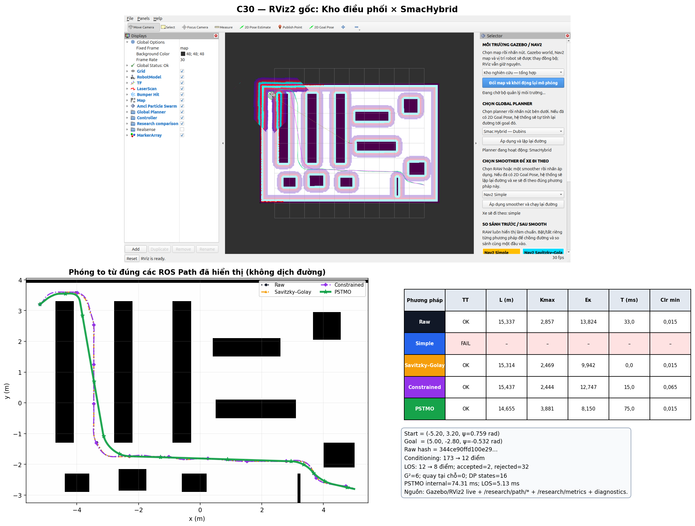
C30: ảnh RViz2 gốc, phóng to exact ROS paths và bảng metric cùng ca.
So với baseline ROS có Kmax thấp nhất (Constrained), Kmax của PSTMO tăng 58.77%.
So với baseline ROS có Eκ thấp nhất (Savitzky–Golay), Eκ của PSTMO giảm 18.02%.
So với baseline ROS ngắn nhất (Savitzky–Golay), chiều dài PSTMO giảm 4.30%.
Clearance footprint tối thiểu hậu kiểm của PSTMO là 0.015 m; số mẫu va chạm = 0.
Simple không xuất đường hợp lệ trong ca này; ảnh và bảng giữ trạng thái FAIL thay vì điền 0 hoặc loại ca. Nav2 SmoothPath status=6, code=503; collision tại x=-4.741290, y=3.482165, yaw=0.352672.
Chẩn đoán: raw 173 → conditioned 12 → LOS 8 điểm; 6 transition, 0 quay tại chỗ, 139 đánh giá hình dạng, runtime nội bộ 74.31 ms.
15.7. Kho có lối đi dài
Các hành lang song song dài kiểm tra shortcut LOS và tích lũy độ cong trên quãng dài.
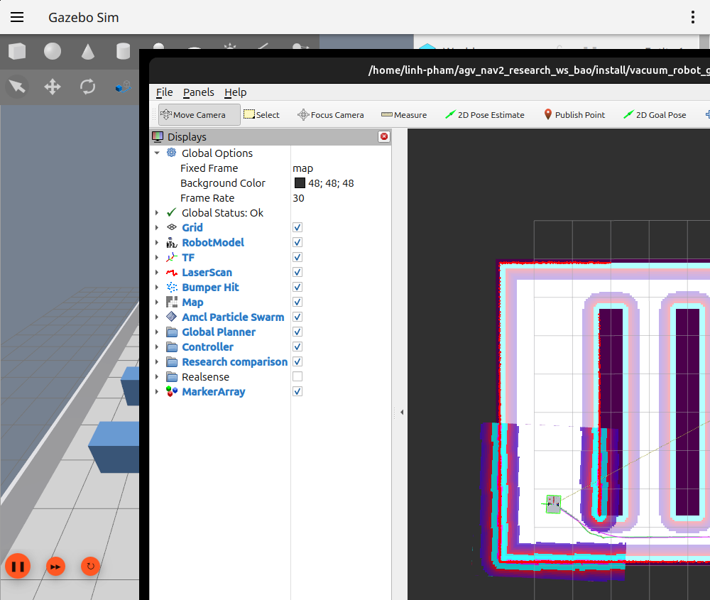
Gazebo world thật — Kho có lối đi dài.
C31 — NavFnAStar — Tuyến bổ sung hàng chéo
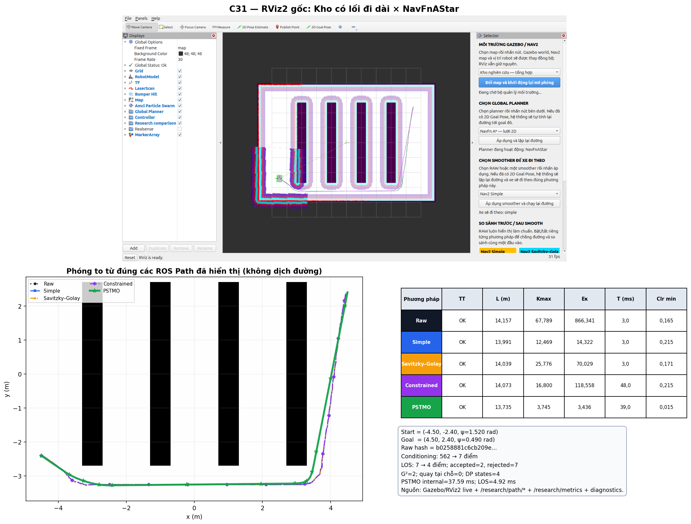
C31: ảnh RViz2 gốc, phóng to exact ROS paths và bảng metric cùng ca.
So với baseline ROS có Kmax thấp nhất (Simple), Kmax của PSTMO giảm 69.97%.
So với baseline ROS có Eκ thấp nhất (Simple), Eκ của PSTMO giảm 76.01%.
So với baseline ROS ngắn nhất (Simple), chiều dài PSTMO giảm 1.83%.
Clearance footprint tối thiểu hậu kiểm của PSTMO là 0.015 m; số mẫu va chạm = 0.
Chẩn đoán: raw 562 → conditioned 7 → LOS 4 điểm; 2 transition, 0 quay tại chỗ, 27 đánh giá hình dạng, runtime nội bộ 37.59 ms.
C32 — NavFnDijkstra — Tuyến bổ sung hàng chéo
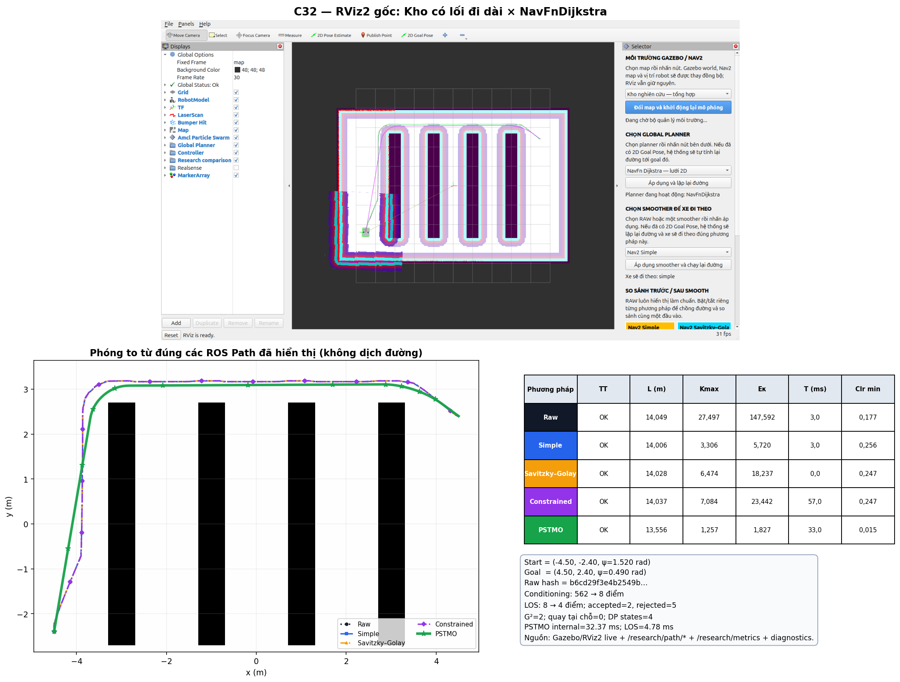
C32: ảnh RViz2 gốc, phóng to exact ROS paths và bảng metric cùng ca.
So với baseline ROS có Kmax thấp nhất (Simple), Kmax của PSTMO giảm 61.97%.
So với baseline ROS có Eκ thấp nhất (Simple), Eκ của PSTMO giảm 68.06%.
So với baseline ROS ngắn nhất (Simple), chiều dài PSTMO giảm 3.22%.
Clearance footprint tối thiểu hậu kiểm của PSTMO là 0.015 m; số mẫu va chạm = 0.
Chẩn đoán: raw 562 → conditioned 8 → LOS 4 điểm; 2 transition, 0 quay tại chỗ, 26 đánh giá hình dạng, runtime nội bộ 32.37 ms.
C33 — ThetaStar — Tuyến bổ sung hàng chéo
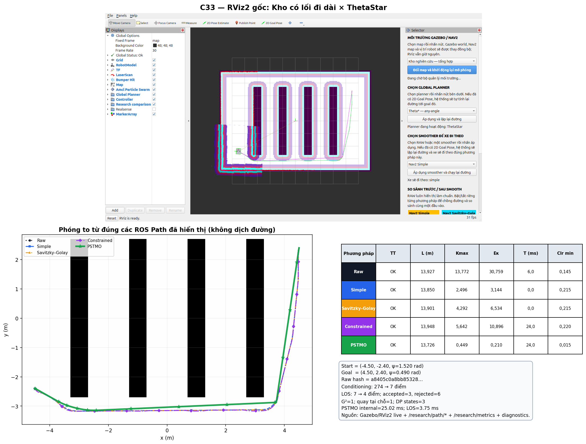
C33: ảnh RViz2 gốc, phóng to exact ROS paths và bảng metric cùng ca.
So với baseline ROS có Kmax thấp nhất (Simple), Kmax của PSTMO giảm 82.01%.
So với baseline ROS có Eκ thấp nhất (Simple), Eκ của PSTMO giảm 93.31%.
So với baseline ROS ngắn nhất (Simple), chiều dài PSTMO giảm 0.90%.
Clearance footprint tối thiểu hậu kiểm của PSTMO là 0.015 m; số mẫu va chạm = 0.
Chẩn đoán: raw 274 → conditioned 7 → LOS 4 điểm; 1 transition, 1 quay tại chỗ, 22 đánh giá hình dạng, runtime nội bộ 25.02 ms.
C34 — Smac2D — Tuyến bổ sung hàng chéo
C34: ảnh RViz2 gốc, phóng to exact ROS paths và bảng metric cùng ca.
So với baseline ROS có Kmax thấp nhất (Simple), Kmax của PSTMO tăng 21.18%.
So với baseline ROS có Eκ thấp nhất (Simple), Eκ của PSTMO giảm 34.24%.
So với baseline ROS ngắn nhất (Simple), chiều dài PSTMO giảm 3.11%.
Clearance footprint tối thiểu hậu kiểm của PSTMO là 0.015 m; số mẫu va chạm = 0.
Chẩn đoán: raw 271 → conditioned 9 → LOS 4 điểm; 2 transition, 0 quay tại chỗ, 26 đánh giá hình dạng, runtime nội bộ 34.23 ms.
C35 — SmacHybrid — Tuyến bổ sung hàng chéo
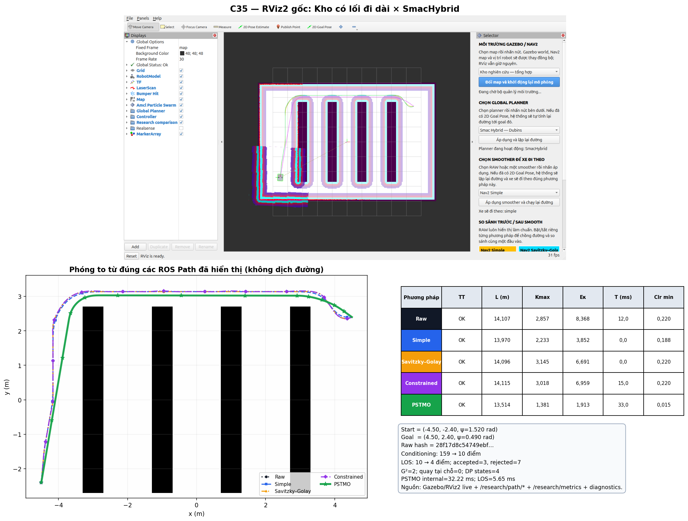
C35: ảnh RViz2 gốc, phóng to exact ROS paths và bảng metric cùng ca.
So với baseline ROS có Kmax thấp nhất (Simple), Kmax của PSTMO giảm 38.15%.
So với baseline ROS có Eκ thấp nhất (Simple), Eκ của PSTMO giảm 50.35%.
So với baseline ROS ngắn nhất (Simple), chiều dài PSTMO giảm 3.27%.
Clearance footprint tối thiểu hậu kiểm của PSTMO là 0.015 m; số mẫu va chạm = 0.
Chẩn đoán: raw 159 → conditioned 10 → LOS 4 điểm; 2 transition, 0 quay tại chỗ, 26 đánh giá hình dạng, runtime nội bộ 32.22 ms.
16. Bảng 35 ca PSTMO
ID
Môi trường
Planner
L
Kmax
Eκ
T nội bộ ms
Clr min
LOS acc
G²
Quay
C01
Không gian mở
NavFnAStar
4,167
0,825
1,134
56,34
0,123
2
2
0
C02
Không gian mở
NavFnDijkstra
4,103
0,734
1,061
33,02
0,065
1
2
0
C03
Không gian mở
ThetaStar
4,115
0,804
1,040
53,18
0,076
1
2
0
C04
Không gian mở
Smac2D
4,035
0,699
0,938
53,73
0,015
1
2
0
C05
Không gian mở
SmacHybrid
4,115
1,028
1,254
46,32
0,035
2
2
0
C06
Kho nghiên cứu
NavFnAStar
4,363
0,856
0,788
16,29
0,035
2
1
0
C07
Kho nghiên cứu
NavFnDijkstra
4,370
0,862
0,799
16,96
0,065
1
1
0
C08
Kho nghiên cứu
ThetaStar
4,340
0,836
0,753
13,77
0,015
1
1
0
C09
Kho nghiên cứu
Smac2D
4,338
0,833
0,746
15,82
0,035
1
1
0
C10
Kho nghiên cứu
SmacHybrid
4,361
0,853
0,784
16,06
0,035
1
1
0
C11
Lối đi hẹp
NavFnAStar
13,810
0,937
1,577
60,41
0,065
4
3
0
C12
Lối đi hẹp
NavFnDijkstra
13,797
0,984
1,762
48,56
0,076
4
3
0
C13
Lối đi hẹp
ThetaStar
13,724
0,952
1,607
47,44
0,015
3
3
0
C14
Lối đi hẹp
Smac2D
13,673
1,942
1,986
50,15
0,015
4
3
0
C15
Lối đi hẹp
SmacHybrid
13,727
0,933
1,582
53,55
0,015
4
3
0
C16
Mê cung văn phòng
NavFnAStar
12,465
0,795
0,933
84,64
0,035
4
3
0
C17
Mê cung văn phòng
NavFnDijkstra
12,405
0,442
0,303
60,37
0,035
4
3
0
C18
Mê cung văn phòng
ThetaStar
12,409
0,418
0,390
59,36
0,076
4
3
0
C19
Mê cung văn phòng
Smac2D
12,373
0,412
0,279
65,45
0,015
4
3
0
C20
Mê cung văn phòng
SmacHybrid
12,420
0,438
0,439
78,48
0,035
3
3
0
C21
Kho có lối giao cắt
NavFnAStar
7,351
0,687
0,990
34,11
0,035
2
2
0
C22
Kho có lối giao cắt
NavFnDijkstra
7,336
0,696
0,953
29,44
0,076
1
2
0
C23
Kho có lối giao cắt
ThetaStar
7,330
0,676
0,946
30,39
0,106
1
2
0
C24
Kho có lối giao cắt
Smac2D
7,283
1,188
1,025
30,87
0,015
2
2
0
C25
Kho có lối giao cắt
SmacHybrid
7,407
0,775
1,121
36,60
0,123
2
2
0
C26
Kho điều phối
NavFnAStar
14,964
1,808
4,544
57,17
0,015
3
3
0
C27
Kho điều phối
NavFnDijkstra
14,932
2,342
5,424
50,18
0,015
2
3
0
C28
Kho điều phối
ThetaStar
15,009
1,133
1,079
50,93
0,015
2
2
1
C29
Kho điều phối
Smac2D
14,851
2,478
4,322
52,76
0,015
2
3
0
C30
Kho điều phối
SmacHybrid
14,655
3,881
8,150
74,31
0,015
2
6
0
C31
Kho có lối đi dài
NavFnAStar
13,735
3,745
3,436
37,59
0,015
2
2
0
C32
Kho có lối đi dài
NavFnDijkstra
13,556
1,257
1,827
32,37
0,015
2
2
0
C33
Kho có lối đi dài
ThetaStar
13,726
0,449
0,210
25,02
0,015
3
1
1
C34
Kho có lối đi dài
Smac2D
13,497
2,031
2,162
34,23
0,015
2
2
0
C35
Kho có lối đi dài
SmacHybrid
13,514
1,381
1,913
32,22
0,015
3
2
0
17. Giới hạn và tuyên bố không vượt quá bằng chứng
Đây là 35 ca đại diện, không phải toàn bộ không gian start–goal.
Ảnh chứng minh output trong RViz2/Gazebo nhưng không thay thế thử nghiệm robot thật.
Clearance tĩnh không đo sai số localization, trượt bánh hay vật cản động.
Smac Hybrid dùng Dubins tiến-only, khác motion model robot vi sai có thể quay tại chỗ.
Thời gian GUI chịu scheduler và tải hiển thị; runtime nội bộ được báo riêng.
PSTMO tối ưu Eκ của transition và local objective, không chứng minh nghiệm tối ưu toàn cục trên mọi đường liên tục.
LOS tham lam là lựa chọn kiến trúc đã chốt; nó không quay lui hoặc tối ưu clearance toàn đường.
18. Kiểm thử phần mềm
Build/test cuối: 308 test, 0 error, 0 failure, 40 skipped (các skip của static-analysis/cppcheck theo môi trường). Test bao phủ coarse/recovery/refinement; α=0,5; hai d; DP; footprint translation/rotation; LOS start/junction/goal; cấu hình PSTMO/Hybrid; và hợp đồng môi trường.
19. Tái lập
Build workspace bằng colcon và source install/setup.bash.
Launch từng world với start pose gồm yaw trong JSON.
Dùng tools/capture_pstmo_rviz_evidence.py cho từng planner và goal pose.
Kiểm tra search_mode, preprocessing_mode, pipeline count và final invariant.
Chạy script báo cáo này để tính clearance từ exact path, tạo composite, CSV/JSON và HTML.
Chuyển HTML sang DOCX, sau đó LibreOffice xuất PDF.
Git HEAD khi tạo báo cáo: d3bef76f3032469e33b4b62239c6afa9fcf74a78. Worktree có thể có thay đổi chưa commit; hash tệp ở trên mới là định danh trực tiếp cho nội dung thuật toán báo cáo.